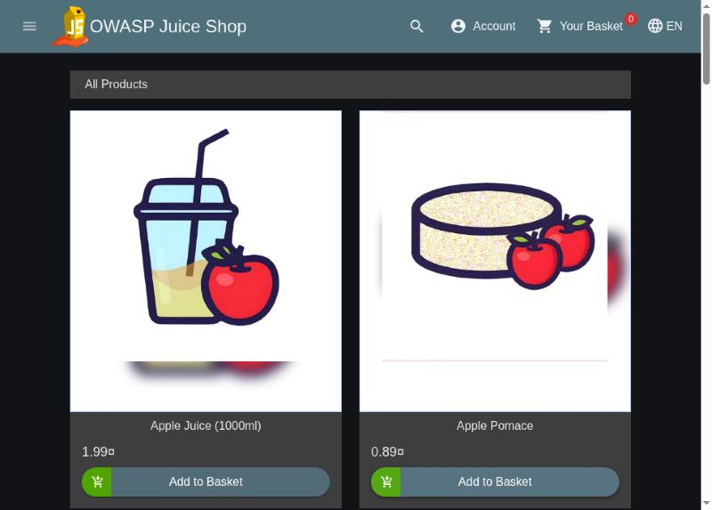
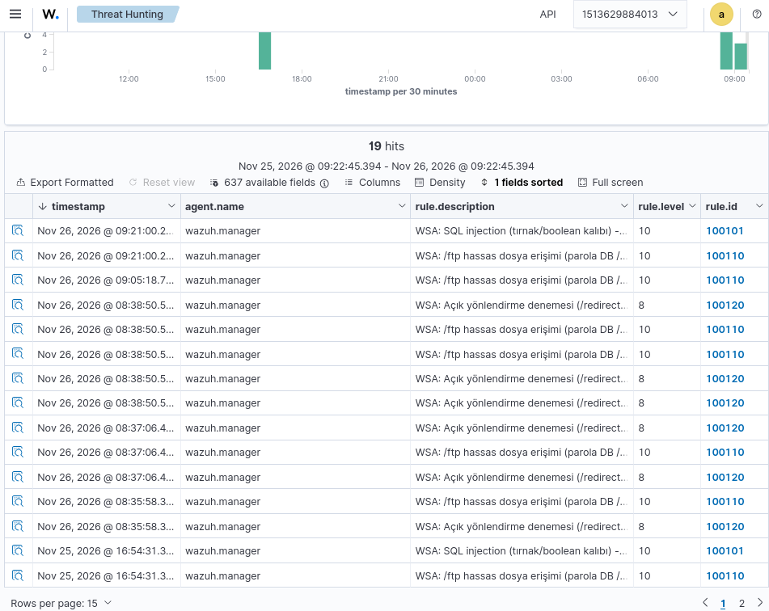
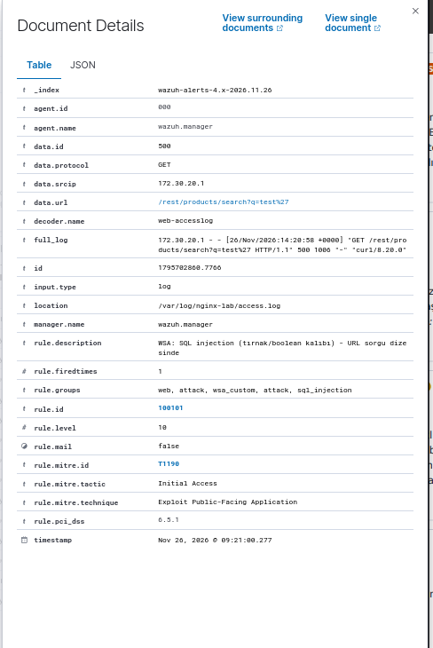

| Belge başlığı | Web Uygulaması Güvenlik Değerlendirme Raporu |
|---|---|
| Hedef sistem | OWASP Juice Shop v20.4.0, nginx 1.30.7 ters vekil, izole Docker lab |
| Değerlendirme türü | Gri kutu web uygulaması sızma testi (keşiften yeniden teste) |
| Test tarihleri | 22 Kasım 2026 - 26 Kasım 2026 |
| Hazırlayan | Ömer Zaif |
| Durum | Nihai |
Bu projede, kendi kurduğum izole bir lab ortamında OWASP Juice Shop uygulamasına uçtan uca bir güvenlik değerlendirmesi yaptım. Amacım yalnızca açık bulmak değildi. Bir saldırının baştan sona nasıl ilerlediğini görmek istedim: saldırı, bunu SIEM'de yakalama, trafiği inceleme, açığı kapatma ve yeniden test etme. Böylece işin hem saldırgan hem savunmacı tarafını aynı projede deneyimledim.
Hedef uygulamayı bir nginx ters vekil arkasına koydum ve trafiği Wazuh ile izledim. Toplam 7 zafiyet buldum ve hepsini elle doğruladım. En ciddisi, parolayı hiç bilmeden yönetici hesabına girmemi sağlayan bir SQL enjeksiyonu.
| Önem | Adet | Bulgular |
|---|---|---|
| Kritik | 1 | F-01 SQLi ile kimlik doğrulama atlatma |
| Yüksek | 2 | F-02 Aramada SQLi, F-04 Hassas dosya ifşası (KeePass) |
| Orta | 3 | F-03 Yetkisiz veri ifşası, F-05 Açık yönlendirme, F-07 Eksik güvenlik başlıkları |
| Düşük | 1 | F-06 Gevşek CORS |
nginx katmanında temiz biçimde çözülebilen 4 bulgu (F-04, F-05, F-06, F-07) ve keşifte tespit edilen sürüm ifşası (R-07) düzeltildi ve yeniden test edildi. Kök nedeni uygulama kodunda olan SQL enjeksiyonu (F-01, F-02) ve yetkisiz erişim (F-03) için kod düzeyinde düzeltme önerileri sundum. Ayrıca saldırıların bir kısmının standart SIEM kurallarınca görülmediğini tespit ederek 3 özel Wazuh kuralı yazdım ve doğruladım.
Rapor boyunca kendime koyduğum bir kural vardı: yalnızca gerçekten yaptığım testleri yazdım. Araçların söylediğine olduğu gibi güvenmedim, yanlış alarmları tek tek elle kontrol edip ayıkladım. Yakalayamadığım saldırıları da açıkça yazdım. Nitekim bu revizyonda, kendi nginx ve Wazuh kurallarımın sınırlarını da (atlatılabildikleri ve yanlış pozitif ürettikleri durumlar) test edip 8. bölümde dürüstçe belgeledim.
| Kapsam içi | Kapsam dışı |
|---|---|
|
OWASP Juice Shop (hedef) nginx ters vekil İzole Docker ağları: 172.30.10.0/24, 172.30.20.0/24 Giriş noktası: http://127.0.0.1:8080 |
İnternetteki her IP, alan adı veya servis LAN, yönlendirici, VM host makinesi Wazuh bileşenleri (yalnızca gözlemci) DoS, yük testi, kaynak tüketme |
Saldırı kaynağı yalnızca aynı Kali VM'dir. Hedef portlar yalnızca 127.0.0.1'e bağlanmış, iç uygulama
ağı internete çıkışsız (internal: true) yapılandırılmıştır. Böylece lab dışına hiçbir trafik gitmez.
Her tarama öncesinde hedeflerin lab ağına ait olduğu docker network inspect ile doğrulanmıştır.
Uygulama saldırıları yalnızca nginx üzerinden (127.0.0.1:8080) yapılmıştır. Juice Shop'a köprü
arayüzünden doğrudan erişim (172.30.10.10:3000) bir keşif bulgusu olarak belgelenmiş, saldırı için
kullanılmamıştır (bkz. 8. bölüm, R-01).
Değerlendirmeyi yedi fazda yürüttüm:
| Faz | İçerik | Başlıca araçlar |
|---|---|---|
| 0-1 | Planlama ve izole lab kurulumu | Docker Compose, nginx, Wazuh |
| 2 | Keşif (host, port, servis ve içerik keşfi) | nmap, ffuf, curl |
| 3 | Zafiyet analizi (7 bulgu, elle doğrulama) | OWASP ZAP, Burp, elle test |
| 4 | Tespit mühendisliği (özel kurallar) | Wazuh |
| 5 | Ağ trafiği analizi | tshark, Wireshark |
| 6 | Düzeltme ve yeniden test | nginx sertleştirme |
| 7 | Raporlama | - |
Mimari. Kali (saldırgan: nmap, ZAP, Wireshark) istekleri 127.0.0.1:8080 üzerinden
nginx ters vekile, oradan izole ağdaki Juice Shop'a gönderir. nginx erişim ve hata logları Wazuh yöneticisine
beslenir; Wazuh indexer ve panosu olayları toplar. Tüm bileşenler tek VM'de, yalnızca loopback'e bağlıdır.

http://127.0.0.1:8080 üzerinde çalışırken.Faz 2 keşfinde nmap ile servis ve sürüm tespiti yaptım. Aşağıda ilgili taramanın ham çıktısı yer alıyor.
Şekil 3. nmap servis/sürüm tespiti (ham çıktı, Reconnaissance/scans/03c-svc-localhost-8080.nmap).
nginx 1.30.7 sürümü açıkça ifşa oluyor (R-07), robots.txt /ftp dizinini işaret ediyor (F-04'e giden ilk ipucu).
http-open-proxy uyarısı yanlış pozitiftir; bu bir saldırıya açık proxy değil, kasıtlı bir ters vekildir.
| ID | Başlık | Önem | OWASP 2025 (2021) | Wazuh | Düzeltme |
|---|---|---|---|---|---|
| F-01 | SQLi ile kimlik doğrulama atlatma | Kritik | A05 (A03) | Hayır | Kod önerisi |
| F-02 | Ürün aramada SQLi ve hata ifşası | Yüksek | A05 (A03) | Kısmi | Kod önerisi |
| F-04 | Hassas dosya ifşası (/ftp, KeePass) | Yüksek | A01/A02 (A01/A05) | Kısmi | nginx (uygulandı) |
| F-03 | Yetkisiz veri ifşası (/api/Feedbacks) | Orta | A01 (A01) | Hayır | Kod önerisi |
| F-05 | Açık yönlendirme (izin listesi atlatma) | Orta | A01 (A01) | Hayır | nginx (kısmi, bkz. 8) |
| F-07 | Eksik güvenlik başlıkları (CSP) | Orta | A02 (A05) | Hayır | nginx (uygulandı) |
| F-06 | Gevşek CORS (ACAO: *) | Düşük | A02 (A05) | Hayır | nginx (uygulandı) |
OWASP Top 10:2025 eşlemesi 2021 ile karşılaştırıldığında: Injection A03:2021 kategorisi A05:2025'e,
Security Misconfiguration A05:2021 kategorisi A02:2025'e taşındı; Broken Access Control her iki sürümde de A01.
Eşleme top10.owasp.org/2025 resmi listesinden teyit edildi.
Her bulgu için CVSS 3.1 taban vektörünü ve puanını kendim hesapladım. Puanlar, zafiyetin kendi doğasını (üretim benzeri bir bağlamda) yansıtır; lab yalıtımı bir ortamsal hafifletmedir ve taban puana dahil edilmemiştir.
| ID | Puan | Önem | CVSS 3.1 vektörü |
|---|---|---|---|
| F-01 | 9.8 | Kritik | AV:N/AC:L/PR:N/UI:N/S:U/C:H/I:H/A:H |
| F-02 | 7.5 | Yüksek | AV:N/AC:L/PR:N/UI:N/S:U/C:H/I:N/A:N |
| F-04 | 7.5 | Yüksek | AV:N/AC:L/PR:N/UI:N/S:U/C:H/I:N/A:N |
| F-03 | 5.3 | Orta | AV:N/AC:L/PR:N/UI:N/S:U/C:L/I:N/A:N |
| F-05 | 4.7 | Orta | AV:N/AC:L/PR:N/UI:R/S:C/C:N/I:L/A:N |
| F-07 | 4.3 | Orta | AV:N/AC:L/PR:N/UI:R/S:U/C:L/I:N/A:N |
| F-06 | 3.1 | Düşük | AV:N/AC:H/PR:N/UI:R/S:U/C:L/I:N/A:N |
Puanlama gerekçeleri (kısa). F-01: Ağdan, kimlik doğrulamasız ve etkileşimsiz sömürülür; başarılı atlatma yönetici hesabının tüm verisini okuma, değiştirme ve silme yetkisi verdiği için gizlilik, bütünlük ve erişilebilirlik etkisi tamdır. F-02: Enjeksiyon veritabanı içeriğinin okunmasına olanak tanır (gizlilik tam); SQLite sürücüsü tek sorguda yığın ifadeye izin vermediği için doğrudan bütünlük/erişilebilirlik etkisi alınmamıştır. F-04: Parola veritabanı ve yedekler kimlik doğrulamasız indirilebiliyor (gizlilik tam), yazma etkisi yok. F-03: Yalnızca geri bildirim verisi ve kısmi kimlikler sızıyor (sınırlı gizlilik). F-05: Kurbanın bağlantıya tıklaması gerekir (UI:R) ve etki uygulama sınırının dışına taşar (S:C), bütünlük sınırlıdır. F-07: CSP eksikliği tarayıcı savunmasını zayıflatır, Referrer sızıntısı sınırlı gizlilik doğurur; etki için kullanıcı etkileşimi veya var olan bir XSS gerekir. F-06: Yalnızca halka açık veri çapraz kaynak okunabilir ve Allow-Credentials kapalı olduğu için kimlik bilgili saldırı mümkün değildir, bu yüzden pratik etki düşüktür.
| Önem | Kritik |
|---|---|
| CVSS 3.1 | 9.8 (CVSS:3.1/AV:N/AC:L/PR:N/UI:N/S:U/C:H/I:H/A:H) |
| OWASP Top 10 | A05:2025 Injection (A03:2021) |
| CWE | CWE-89 (SQL Injection), CWE-287 (Improper Authentication) |
| Etkilenen bileşen | POST /rest/user/login, email alanı |
| Durum | Açık. Kök neden uygulama kodunda; kod düzeyinde düzeltme önerildi. |
Açıklama. Giriş uç noktası email alanını doğrudan bir SQL sorgusuna yerleştiriyor.
' OR 1=1-- yükü sorgu mantığını her zaman doğru yaparak parola bilinmeden ilk kullanıcıyla (yönetici)
oturum açıyor.
Yeniden üretme ve kanıt. Önce yanlış parolayla negatif test yaptım (401 bekleniyor), ardından aynı uç noktaya enjeksiyon yükünü gönderdim. Aşağıda bu iki isteğin ham çıktısı yer alıyor (JWT ve hassas alanlar maskelendi).
Şekil 4. Yanlış parola 401 dönerken, ' OR 1=1-- yükü HTTP 200 ile parolasız yönetici
girişi sağlıyor (umail: admin@juice-sh.op). JWT raporda maskelendi ve saklanmadı.
Etki. Yönetici dahil tüm hesaplara tam erişim. Kimlik doğrulama tamamen atlanabiliyor. Bu, uygulamadaki en yüksek etkili bulgu.
Öneri. Parametreli sorgu veya ORM parametre bağlama kullanılmalı; kullanıcı girdisi asla SQL metnine eklenmemeli. Kimlik doğrulama sorgusu tek kullanıcıya indirgenip sabit zamanlı parola doğrulaması yapılmalı.
| Önem | Yüksek |
|---|---|
| CVSS 3.1 | 7.5 (CVSS:3.1/AV:N/AC:L/PR:N/UI:N/S:U/C:H/I:N/A:N) |
| OWASP Top 10 | A05:2025 Injection (A03:2021) |
| CWE | CWE-89 (SQL Injection), CWE-209 (Hata Mesajıyla Bilgi İfşası) |
| Etkilenen bileşen | GET /rest/products/search?q= |
| Durum | Açık. Kök neden uygulama kodunda; kod düzeyinde düzeltme önerildi. |
Açıklama. Arama parametresi bir LIKE '%...%' cümlesine doğrudan giriyor. Tek tırnak
eklendiğinde sunucu tam hata mesajını (SQLITE_ERROR: near "'%'": syntax error) döndürüyor. Bu hem
enjeksiyonu kanıtlıyor hem de veritabanı türünü ve sorgu yapısını sızdırıyor.
Yeniden üretme. q=apple ile normal arama HTTP 200, 3 ürün döndürür.
q=test%27 (tek tırnak) ile sunucu HTTP 500 ve tam SQL hata başlığını döndürür.
Kanıt. 500 yanıtının gövdesi Error: SQLITE_ERROR: near "'%'": syntax error satırını
içeriyor. Sorumlu test gereği tüm kullanıcı tablosu çekilmedi; enjeksiyonun varlığı hata sızıntısı ve sözdizimi
kırılmasıyla kanıtlandı.
Etki. Veritabanından yetkisiz veri okuma (kullanıcı e-postaları, parola hash'leri dahil olabilir). Ayrıntılı hata mesajları keşfi kolaylaştırıyor.
Öneri. Parametreli sorgu kullanılmalı (LIKE kalıbında da bağlama parametresi). Üretimde ayrıntılı hatalar kapatılmalı; istemciye genel hata, ayrıntı yalnızca sunucu loguna gitmeli.
| Önem | Yüksek |
|---|---|
| CVSS 3.1 | 7.5 (CVSS:3.1/AV:N/AC:L/PR:N/UI:N/S:U/C:H/I:N/A:N) |
| OWASP Top 10 | A01:2025 / A02:2025 (A01:2021 / A05:2021) |
| CWE | CWE-548 (Dizin Listeleme), CWE-200 (Bilgi İfşası) |
| Etkilenen bileşen | GET /ftp/ ve altındaki dosyalar |
| Durum | Düzeltildi (nginx 403) ve yeniden test edildi. Kalıntı risk için bkz. 8 (R-01). |
Açıklama. /ftp dizini listelenebiliyor; içinde bir KeePass parola veritabanı
(incident-support.kdbx) ve yedek dosyalar kimlik doğrulamasız indirilebiliyor. Sunucu bazı uzantıları
(.bak, .pyc) engelliyor ama .kdbx'i engellemiyor. Bu, kara liste yaklaşımının
tipik zayıflığı.
Yeniden üretme ve kanıt. /ftp/ HTTP 200 ile dizin listesi döndürür.
/ftp/incident-support.kdbx HTTP 200 ile 3246 baytlık KeePass veritabanını indirir. Dosyalar diske kalıcı
kaydedilmedi, KeePass veritabanı açılmaya veya kırılmaya çalışılmadı; yalnızca erişilebilirliği kanıtlandı.
Etki. Hassas iş dosyaları ve bir parola veritabanı herkese açık. Parola veritabanı, ana parola zayıfsa çevrimdışı kırma denemesine maruz. Yedek dosyaları kaynak kod ve sır sızıntısı riski taşır.
Öneri. Dizin listelemesi kapatılmalı, dosyalara erişim kaldırılmalı veya kimlik doğrulaması arkasına alınmalı. Kara liste yerine beyaz liste kullanılmalı. Parola veritabanı ve yedekler web kök dizininde hiç bulunmamalı.
| Önem | Orta |
|---|---|
| CVSS 3.1 | 5.3 (CVSS:3.1/AV:N/AC:L/PR:N/UI:N/S:U/C:L/I:N/A:N) |
| OWASP Top 10 | A01:2025 Broken Access Control (A01:2021) |
| CWE | CWE-284 (Improper Access Control), CWE-200 (Bilgi İfşası) |
| Etkilenen bileşen | GET /api/Feedbacks |
| Durum | Açık. Kök neden uygulama kodunda; kod düzeyinde düzeltme önerildi. |
Açıklama. Uç nokta, kimlik doğrulaması olmadan tüm müşterilerin geri bildirimlerini (farklı
UserId değerleri, kısmen maskeli e-postalar) döndürüyor. /api/Users ve
/api/Cards gibi uç noktalar doğru biçimde 401 verirken bu uç nokta korumasız. Erişim kontrolü tutarsız
uygulanmış.
Yeniden üretme ve kanıt. GET /api/Feedbacks kimlik doğrulamasız HTTP 200 döndürüyor.
8 geri bildirim döndü; UserId dağılımı birden fazla müşteriye işaret ediyor ve yorumların bir kısmı
kısmen maskeli, tahmin edilebilir e-postalar içeriyor.
Etki. Kimliği doğrulanmamış herkes müşteri geri bildirimlerini ve dolaylı olarak kullanıcı kimliklerini görebiliyor. Tek başına düşük ila orta, ancak F-01 ile birleşince kullanıcı numaralandırmasına katkı sağlar.
Öneri. Uç noktaya erişim kontrolü eklenmeli; liste uç noktası yönetici yetkisi istemeli. Yanıttan
UserId ve e-posta gibi kimlik alanları çıkarılmalı.
| Önem | Orta |
|---|---|
| CVSS 3.1 | 4.7 (CVSS:3.1/AV:N/AC:L/PR:N/UI:R/S:C/C:N/I:L/A:N) |
| OWASP Top 10 | A01:2025 Broken Access Control (A01:2021) |
| CWE | CWE-601 (URL Redirection to Untrusted Site) |
| Etkilenen bileşen | GET /redirect?to= |
| Durum | nginx'te kısmen hafifletildi. İmza tabanlı kural atlatılabildi (bkz. 8, R-05). |
Açıklama. Yönlendirme hedefi "içinde geçiyor mu" (substring) mantığıyla denetleniyor. İzinli bir
URL'yi parametre olarak içeren dış adrese yönlendirme mümkün. Örneğin
?to=https://example.com/x?p=https://github.com/juice-shop/juice-shop isteği saldırgan adresine 302
döndürüyor. Kimlik avı için kötüye kullanılabilir.
Yeniden üretme. Tam izinli hedef (to=https://github.com/juice-shop/juice-shop) 302 ile
github'a gider. İzinli metin hiç içermeyen hedef (to=https://example.com/) 406 ile reddedilir. İzinli
metni sorgu parametresi olarak içeren dış hedef ise 302 ile example.com'a yönlendirir.
Etki. Kurbana güvenilir görünen mağaza bağlantısı gönderilip saldırgan sitesine düşürülebilir, bu da kimlik avına, sahte giriş sayfasına veya kötü amaçlı indirmeye yol açar.
Öneri. İzin listesi kontrolü tam eşleşme yapılmalı (substring değil). Daha iyisi, dışarı
yönlendirme tamamen kaldırılmalı veya yalnızca göreli (/...) yollara izin verilmeli.
| Önem | Orta |
|---|---|
| CVSS 3.1 | 4.3 (CVSS:3.1/AV:N/AC:L/PR:N/UI:R/S:U/C:L/I:N/A:N) |
| OWASP Top 10 | A02:2025 Security Misconfiguration (A05:2021) |
| CWE | CWE-693 (Protection Mechanism Failure), CWE-1021 (Clickjacking) |
| Etkilenen bileşen | HTTP yanıt başlıkları (uygulama geneli) |
| Durum | Düzeltildi (nginx) ve yeniden test edildi. |
Açıklama. Content-Security-Policy, Referrer-Policy ve Permissions-Policy başlıkları yoktu (X-Frame-Options ve X-Content-Type-Options mevcuttu). CSP eksikliği, olası bir XSS'in etkisini büyütür.
Kanıt. curl -D - ile alınan baseline yanıtında yalnızca X-Frame-Options:
SAMEORIGIN ve X-Content-Type-Options: nosniff vardı; CSP, Referrer-Policy ve Permissions-Policy
yoktu (eski Feature-Policy: payment 'self' mevcuttu).
Etki. CSP yokluğu, bir XSS durumunda tarayıcı tarafı savunmayı devre dışı bırakır. Referrer-Policy yokluğu URL'lerdeki hassas bilgilerin üçüncü taraflara sızmasına yol açabilir.
Öneri. nginx'te CSP, Referrer-Policy ve Permissions-Policy eklendi (uygulandı). Referrer-Policy
için eklenen no-referrer-when-downgrade değeri görece zayıftır; daha güvenli bir seçenek olan
strict-origin-when-cross-origin önerilir (bkz. 8, R-06).
| Önem | Düşük |
|---|---|
| CVSS 3.1 | 3.1 (CVSS:3.1/AV:N/AC:H/PR:N/UI:R/S:U/C:L/I:N/A:N) |
| OWASP Top 10 | A02:2025 Security Misconfiguration (A05:2021) |
| CWE | CWE-942 (Overly Permissive Cross-domain Policy) |
| Etkilenen bileşen | Tüm yanıtlar (uygulama geneli) |
| Durum | Düzeltildi (nginx başlığı kaldırdı) ve yeniden test edildi. |
Açıklama. Access-Control-Allow-Origin: * her yanıtta mevcut. Ancak
Access-Control-Allow-Credentials ayarlı olmadığından kimlik bilgili saldırı mümkün değil; bu yüzden önem
düşük. Bulgu olduğundan büyük gösterilmedi.
Kanıt. Sahte Origin başlığıyla bile ACAO: * hem 200 hem 401
yanıtlarında döndü; Allow-Credentials hiç bulunmadı.
Etki. Sınırlı: yalnızca kimlik doğrulamasız, halka açık uç noktaların çapraz kaynak okunması. Kimlik bilgili saldırı (en tehlikeli CORS senaryosu) mümkün değil.
Öneri. ACAO değeri * yerine bilinen güvenilir kaynaklarla sınırlanmalı,
gerekmiyorsa CORS tamamen kapatılmalı. Uygulama aynı kaynaktan sunulduğu için nginx'te başlık kaldırıldı.
Bu faz benim için en öğretici kısım oldu: saldırılarımın çoğunu Wazuh hazır kurallarıyla göremedim. Sebebini
araştırınca iki şey çıktı. Birincisi, hazır SQLi kuralı select ve union gibi anahtar
kelimeler arıyor; benim test' ya da ' OR 1=1-- gibi yüklerimde bu kelimeler yoktu. İkincisi,
uygulamaya özel saldırıların (/ftp/*.kdbx, /redirect) hazır bir karşılığı yok. Bu boşlukları
kapatmak için 3 özel kural yazdım:
| Kural | Seviye | Yakaladığı | Bulgu |
|---|---|---|---|
| 100101 | 10 | URL'de tırnak veya boolean tabanlı SQLi | F-02 |
| 100110 | 10 | /ftp hassas uzantı erişimi | F-04 |
| 100120 | 8 | Açık yönlendirme denemesi | F-05 |
Kuralları hem birim testiyle (wazuh-logtest) hem canlı uçtan uca testle doğruladım. Aşağıda kural
100101'in gerçek bir SQLi deneme log satırında tetiklenmesinin ham çıktısı yer alıyor.
Şekil 5. Özel kural 100101, SQLi içeren nginx log satırında tetikleniyor (wazuh-logtest, ham çıktı).


data.url ve ham log satırı.
Burada açıkça söylemem gereken bir sınır var: F-01 giriş SQLi'sini bu kurallarla yakalayamıyorum. Çünkü yük istek
gövdesinde gidiyor, nginx erişim logu ise gövdeyi görmüyor; üstelik başarılı giriş 200 dönüyor, yani normal bir
girişten farkı yok. Bunu Faz 5'te paket yakalayarak gösterdim: yükün (' OR 1=1--) telde açıkça
göründüğünü doğruladım. Yani bu saldırı için erişim logu yetmiyor, farklı bir görünürlük katmanı gerekiyor.
Kuralın ne kadar daralttığını görmek için meşru aramaları da wazuh-logtest ile test ettim. Sonuç, kuralın
fazla geniş olduğunu gösterdi: 100101 regexi %20and%20, %20or%20 ve %22
kalıplarını da yakaladığı için doğal dildeki aramalar yanlış pozitif üretiyor.
| Test edilen arama (meşru) | Tetiklenen kural | Seviye | Sonuç |
|---|---|---|---|
q=salt and pepper | 100101 | 10 | Yanlış pozitif |
q="apple" | 100101 | 10 | Yanlış pozitif |
q=rum or coke | 100101 | 10 | Yanlış pozitif |
q=apple | 31100 (temel) | 0 | Doğru (alarm yok) |
q=test' (gerçek saldırı) | 100101 | 10 | Doğru pozitif |
Öneri. Kural daraltılmalı: yalın %20and%20 / %20or%20 / %22
yerine SQLi bağlamı aranmalı. Örneğin boolean operatörü yalnızca bir tırnağa bitişikken (%27%20or,
%27%20and) eşleştirilmeli, veya tırnak kalıbı SQL anahtar kelimeleriyle birlikte istenmeli. Alternatif
olarak SQL sözdizimi hatası dönen yanıtlarla (HTTP 500 ve SQLITE_ERROR) ilişkilendirme kurulmalı.
Config dosyası bu raporda değiştirilmemiştir; bu bir öneridir.
Düzeltmeleri nginx katmanında yaptım ve her birini önce ve sonra test ettim.
| Bulgu | Önce | Sonra |
|---|---|---|
| F-04 /ftp | 200 (kdbx indirilebiliyor) | 403 |
| F-05 açık yönlendirme | atlatma, 302 dış adres | atlatma, 403 (meşru redirect korundu) |
| F-06 CORS | ACAO: * | başlık kaldırıldı |
| F-07 başlıklar | CSP, Referrer, Permissions yok | üçü de eklendi |
| R-07 sürüm | Server: nginx/1.30.7 | Server: nginx |
Aşağıda düzeltme öncesi ve sonrası baseline çıktılarının ilgili satırları yer alıyor
(Remediation/before-after/before.txt ve after.txt).
Şekil 8. nginx düzeltmeleri, her bulgu için önce ve sonra karşılaştırması (ham baseline çıktıları).
Uygulama işlevi korundu (SPA tarayıcıda tam yüklendi; CSP, uygulamanın gerçekten kullandığı kaynaklara göre ayarlandı). Savunma derinliği gösterildi: nginx artık saldırıları engellese de (403), Wazuh kuralları denemeleri hâlâ tespit ediyor, yani saldırgan hem durduruluyor hem loglanıyor.
SQL enjeksiyonu ve yetkisiz erişimin kök nedeni uygulama kodundadır; bunlar için nginx'te kaba kalıp engelleme yerine kod düzeyinde düzeltme önerilmiştir (parametreli sorgular, uç nokta erişim kontrolü). nginx imza tabanlı F-05 kuralının bir atlatması 8. bölümde (R-05) belgelenmiştir.
Aşağıdaki maddeler, bu değerlendirmeden sonra hâlâ geçerli olan riskleri ve yapılan düzeltme/tespit çalışmalarının sınırlarını dürüstçe listeler. Bir raporu değerli yapan, neyin çözülmediğini de açıkça söylemesidir.
Juice Shop konteynerine köprü arayüzünden doğrudan (172.30.10.10:3000) erişilebiliyor. Bu yol nginx'ten
geçmediği için tüm nginx düzeltmeleri (F-04 403, F-05 engeli, F-06 başlık kaldırma, F-07 başlık ekleme) atlanıyor
ve trafik Wazuh'a düşmüyor. Düzeltme sonrası bunu yeniden test ettim; sonuçlar:
| Doğrudan :3000 isteği | Sonuç | nginx üzerinden (:8080) |
|---|---|---|
| Ana sayfa | 200 | 200 |
| /ftp/ | 200 (düzeltme atlandı) | 403 |
| /ftp/incident-support.kdbx | 200, 3246 bayt | 403 |
| /redirect açık yönlendirme | 302 (kural yok) | 403 |
| Güvenlik başlıkları | CSP/Referrer/Permissions yok, ACAO: * | eklendi/kaldırıldı |
Gerçek bir ortamda uygulama yalnızca ters vekil üzerinden erişilebilir olmalı; doğrudan uygulama portu ağ düzeyinde (firewall veya Docker ağ yalıtımı) kapatılmalı. Bu kalıntı risk açık durumdadır.
F-05 için eklenen nginx kuralı, to parametresinde ya iki düz :// ya da iki kodlanmış
%3a%2f%2f arıyor. Karışık kodlama (bir düz, bir kodlanmış şema) bu imzayı atlatıyor. Lab'da test ettim:
İstek (/redirect?to=) | Sonuç |
|---|---|
https://example.com/?p=https%3a%2f%2fgithub.com/... | 302, Location: example.com (atlatma) |
https%3a%2f%2fexample.com/?p=https://github.com/... | 302, Location: example.com (atlatma) |
https%3a%2f%2fexample.com/?p=https%3a%2f%2fgithub.com/... (çift kodlanmış) | 403 (kural yakaladı) |
Yani imza tabanlı nginx kuralı atlatılabildi. Bu, imza/kara liste yaklaşımının bilinen zayıflığını doğruluyor. Öneri: nginx'te eşleştirmeden önce parametreyi normalize etmek (tek seferlik yüzde-çözme sonrası şema sayısını saymak) ya da tek bir dış şemayı bile reddetmek daha dayanıklı olur; ancak asıl ve kalıcı düzeltme uygulamadaki tam-eşleşen izin listesidir. Config dosyası bu raporda değiştirilmemiştir; bu bir öneridir.
docker-compose.yml içinde bu konunun "Faz 6'da ele alınacak" notu bulunuyor, ancak hız sınırlama bu
değerlendirmede uygulanmadı. Durum dürüstçe belirtilir: kaba kuvvet ve otomatik numaralandırmaya karşı nginx
seviyesinde limit_req tabanlı bir sınırlama hâlâ eksiktir.
F-07 düzeltmesinde eklenen CSP, Angular SPA'nın çalışması için script-src içinde
'unsafe-inline' ve 'unsafe-eval' taşıyor. Bu, CSP'nin XSS'e karşı koruma gücünü zayıflatır.
Daha güçlü bir CSP için uygulamanın nonce veya hash tabanlı inline script yaklaşımına geçmesi gerekir; bu, uygulama
kodunda değişiklik gerektirir.
Eklenen Referrer-Policy: no-referrer-when-downgrade değeri, aynı veya daha yüksek güvenlik seviyesindeki
çapraz kaynak isteklerde tam URL'yi (yol ve sorgu dahil) göndermeye devam eder. Daha güvenli bir değer olan
strict-origin-when-cross-origin önerilir. Config dosyası bu raporda değiştirilmemiştir; bu bir
öneridir.
6.1'de gösterildiği gibi, Wazuh kuralı 100101 bazı meşru aramalarda (içinde " and ", " or " veya çift tırnak geçen aramalar) yanlış pozitif üretiyor. Kuralın daraltılması için öneri 6.1'de verilmiştir.
Lab Wazuh kurulumu varsayılan kimlik bilgileriyle çalışıyor. Bu, kabul edilmiş bir lab riskidir; gerçek bir ortamda tüm Wazuh bileşenlerinin (indexer, dashboard, API) varsayılan parolaları ilk kurulumda değiştirilmelidir.
Bu projeden çıkardığım birkaç şey:
İleride yapmak istediklerim: uygulamayı yalnızca ters vekil üzerinden erişilebilir kılmak (R-01), TLS ve HSTS eklemek, SQL enjeksiyonunu kod tarafında düzeltip yeniden test etmek, nginx ve Wazuh kurallarını yukarıdaki önerilere göre güçlendirmek ve keşifte denk geldiğim bellek sızıntısının nedenini araştırmak.
Kali Linux (tek VM), Docker Compose, OWASP Juice Shop v20.4.0, nginx 1.30.7, Wazuh 4.14.10 (single-node), nmap 7.99, OWASP ZAP 2.17.0, Burp Suite, ffuf 2.1.0, tshark ve Wireshark. Tüm ham çıktılar, kurallar ve önce/sonra kanıtları depo içinde fazlara göre düzenlenmiştir (Reconnaissance/, Vulnerability-Analysis/, Findings/, Detection/, Network-Analysis/, Remediation/).